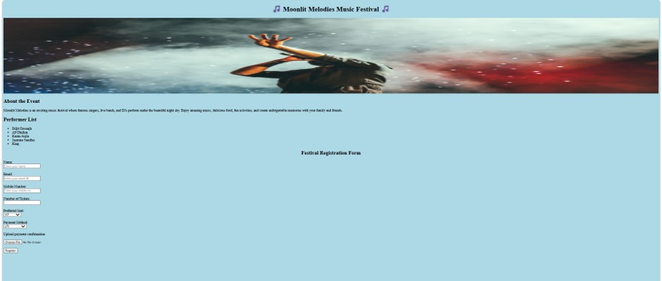
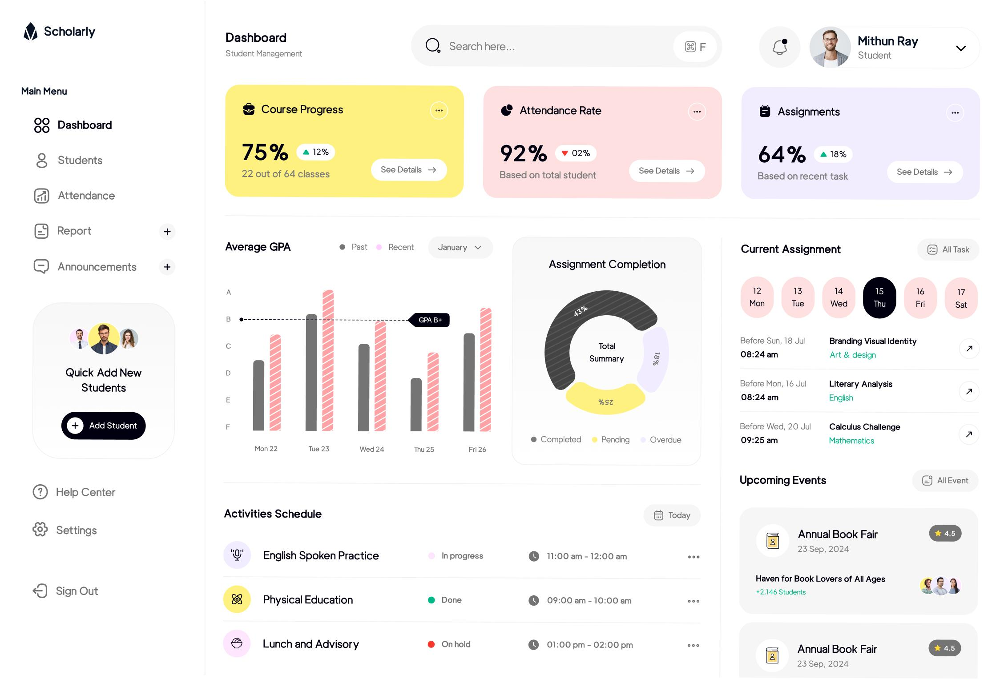

These are some of the projects I have created during my learning journey.

This project is a personal portfolio website created using basic HTML. It contains a Home page, About page, Projects page, and Contact page. It helps introduce myself, my education, skills, and projects.
Technologies Used:
This website displays a restaurant menu and allows customers to reserve a table online. It includes restaurant details, menu table, and reservation form.
Technologies Used:
The Music Fest Website is a simple event website created using HTML. It provides complete information about a music festival, including the event schedule, performers, venue, and ticket details. Visitors can explore the event information and register for the festival through an online registration form. The website is designed with a clean and user-friendly layout to make navigation easy for users.
Technologies Used:
This is a simple project that stores student details and displays marks, grades, and total percentage. It is useful for managing academic records.
Technologies Used: